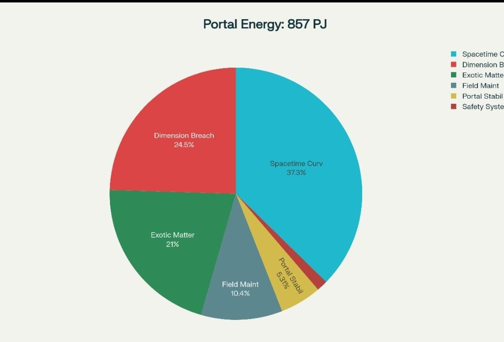

Year 2058, Earth Venta
It was the years when scientists started to think about a way to explore parallel worlds after proving their existence. Wormhole theory — conceptualized through Einstein’s field equations — provided the mathematical foundation for creating traversable bridges between distant points in spacetime.
Dr. Oscar Oyl was appointed Main Researcher of the project and laid its foundation. The project was named “Project Quantum Worlds.” He believed Einstein–Rosen bridges represented theoretical solutions to general relativity that could allow shortcuts through the fabric of spacetime.
He also suggested that string theory provided the mathematical framework for extra dimensions beyond our familiar four-dimensional spacetime. The theory implied our universe may contain up to 11 dimensions, with the additional seven compactified at microscopic scales. Accessing these higher dimensions could provide pathways to parallel universes with fundamentally different properties.
It took him three years to get permission to begin the project.
Year 2068, Earth Venta
Ten years on, the team pushed the theory further. Dr. Oscar Oyl and his colleagues — Dr. Stephen Brown, Dr. Mahesh Thakur, Dr. Farhad Muhammad, Dr. Ellina McDonald, and Dr. Xi Zhixun — produced breakthroughs in quantum gravitational stabilization, dimensional resonance, and negative-energy field dynamics.
Year 2078, Earth Venta
Another decade later the researchers identified the energy requirements and discovered two new kinds of matter that were critical to progress: exotic-matter generators and negative-energy generation devices — a major leap forward.

Calculations showed the energy needed would be enormous — on the order of 857 petajoules (8.57 × 1017 J). Spacetime curvature manipulation consumed the largest share of that demand, followed by dimensional breach creation and exotic-matter generation. Electromagnetic field control required strengths possibly reaching hundreds of tesla.
Year 2088, Earth Venta
With the blueprint ready, the physical build began. Years of engineering, resources from dozens of countries, and decades of research culminated in the Dimension Gate.

Year 2098, Earth Venta
The gate was complete — only coordinates remained. The team initiated the sequence and watched the readouts climb: 30%, 50%, 75%, 99%, 100%... link established. Fluctuations appeared but were rapidly corrected. The aperture shivered, then stabilized.
As the gate opened a dark crimson portal glowed within the ring of exotic matter. The air hummed with a low whisper. For a few breathless moments everyone stood stunned by what they'd achieved — and what they might unleash.
A rookie — impatient and reckless — leapt inside the blackness. He vanished without returning.
Two hours later orders came: send a small recon team. Six elite soldiers suited up in experimental heat-resistant gear, tested cameras, and streamed their feeds back to base.
Their helmets pierced shadows thick as ink. The landscape on the other side was a ruin: cracked brown soil, skeletal remains of trees, rivers dried into salt beds, and lava flowing in rills across the ground. The sky above was a burning, dark red — like looking up through blood.
They set to work: routers near the portal for transmission, foundations for a small stronghold as a forward base, and supplies ferried in by the second team.
The first team took 45 minutes to set up transmission hardware, 20 minutes to test, and a half-hour break. The second team hauled half the materials. The soldiers built a modest line of defense: six rooms, two washrooms, and a central hall. What took them 20 hours felt like 5 hours to command — an anomaly that soon revealed itself.
When Benjamin reported, Dr. Mehta computed a chilling result: time flowed differently through the portal. From Earth’s perspective the team’s 20 hours equated to 5. Time there was slower — roughly one-fifth Earth time. The mission's operation would therefore begin two days after the initial entry, as measured by Earth time.
To Be Continued
Reader Thoughts